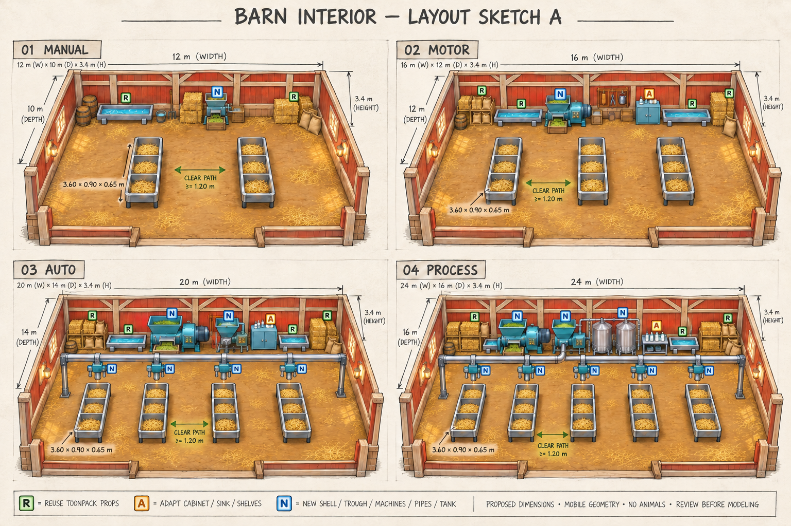
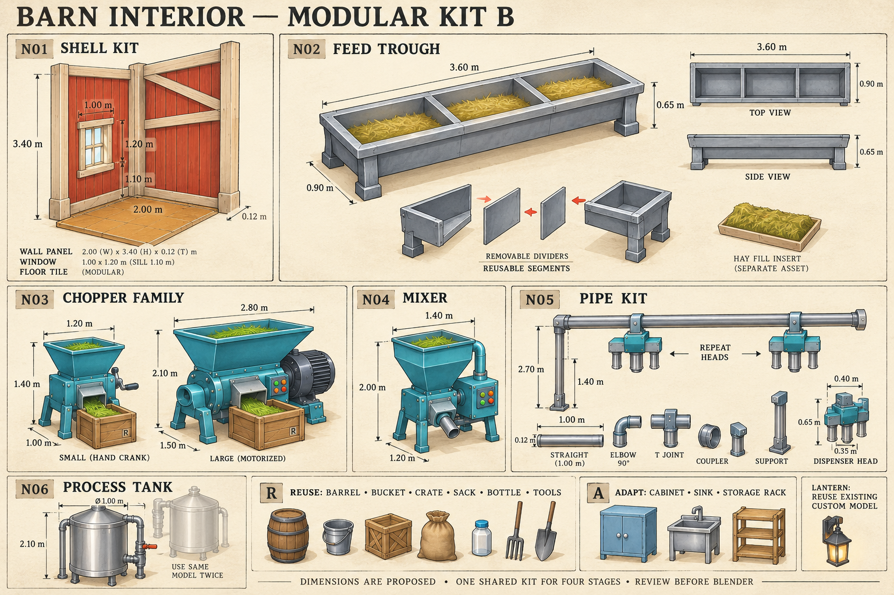

Barn interior — sketch A / kit B
SKETCH UNTUK REVIEW · belum ACC modeling · tanpa hewan
Empat tahap visual dari manual sampai distribusi otomatis dan tangki proses. R = reuse Toonpack, A = adaptasi, N = modul baru. Spesifikasi ukuran dan lingkup menjadi acuan utama; label generatif pada PNG bersifat ilustratif.
A · Empat layout

| Tahap | Area bersih usulan | Palung | Tambahan utama |
|---|
| 01 Manual | 12 × 10 m | 2 | Mesin engkol, satu bak air |
| 02 Motor | 16 × 12 m | 3 | Motor, rak, kabinet, dua bak air |
| 03 Auto | 20 × 14 m | 4 | Mixer, pipa, empat dispenser |
| 04 Process | 24 × 16 m | 5 | Lima dispenser, dua tangki proses |
Usulan lebih padat dari placeholder project. Tinggi dinding 3,40 m; jalur utama 1,80–2,00 m, jalur samping minimum 1,20 m. Footprint dan jalur masih menunggu review/blockout.
B · Kit modular

Palung 3,60 × 0,90 × 0,65 m; pipa pada tinggi 2,70 m; outlet dispenser 1,40 m; satu tangki diameter 1,00 m × tinggi 2,10 m dipakai dua kali. Peralatan memakai komponen bersama untuk semua tahap.
Reuse dan anggaran mobile
Tong, ember, peti, karung, botol dan alat tangan memakai prefab existing; kabinet, sink dan rak diadaptasi. Bal jerami padat dapat disederhanakan agar tidak menghabiskan budget. Target layout aktif tanpa hewan: ≤6k / 8k / 12k / 15k triangle untuk tahap 01–04, belum hasil model.
Kapasitas pakan kode 4/8/14/20 tetap menjadi sumber gameplay. Tiga sekat setiap palung pada sketch belum dipetakan langsung ke kapasitas itu. Tidak ada scene, controller atau model yang diubah pada tahap sketch ini.
Galeri prefab existing · Audit asset · Prompt image_gen